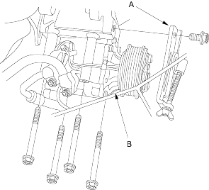
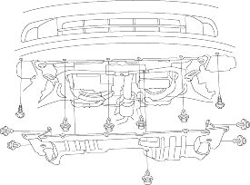
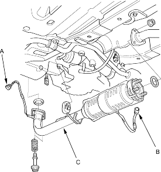

- Remove the alternator lower bracket (A), then remove the A/C compressor (B) without disconnecting the A/C hose.

- Remove the radiator cap.
- Raise the hoist to full height.
- Remove the front tyres/wheels.
- Remove the splash shield.

- Loosen the drain plug in the radiator, drain the engine coolant, refer to the '01 Civic Shop Manual on this CD (see page 10-8).
- Drain the transmission fluid:
- Manual transmission, refer to the '01 Civic Shop Manual on this CD (see page 13-3).
- Automatic transmission, refer to the '01 Civic Shop Manual on this CD (see page 14-122).
- Drain the engine oil (see page 8-3).
- Disconnect the primary heated oxygen sensor (primary HO2S) connector (A) and the secondary heated oxygen sensor (secondary HO2S) connector (B) (Except D16V3 engine).

- Remove exhaust pipe A (C).